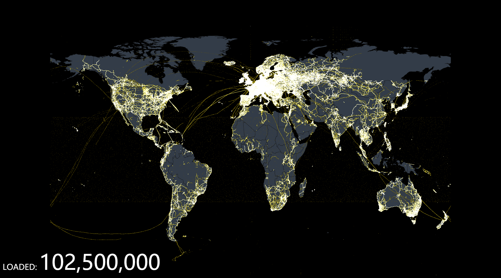
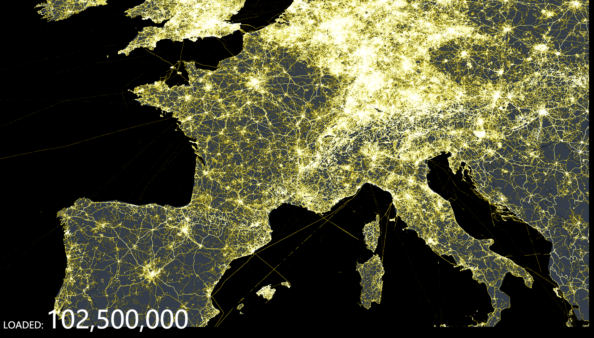
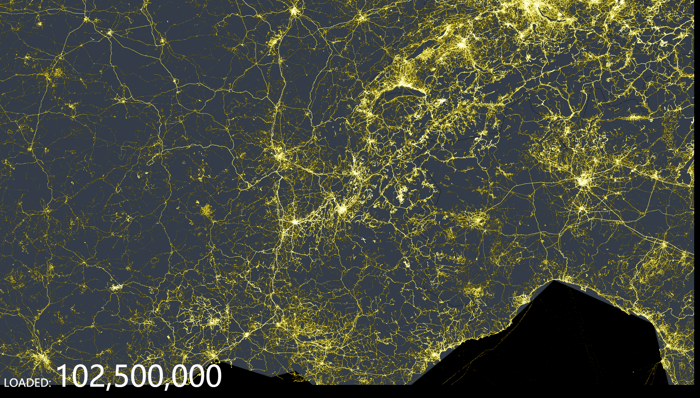
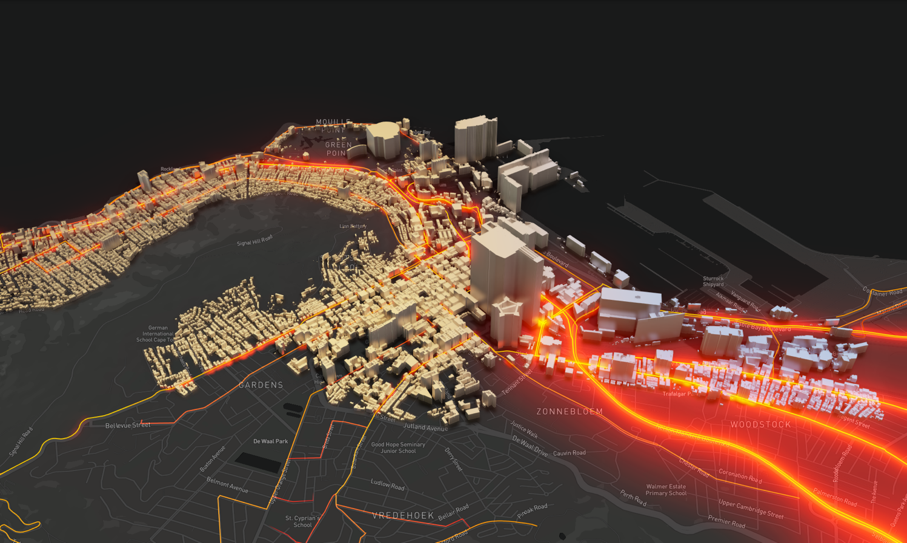
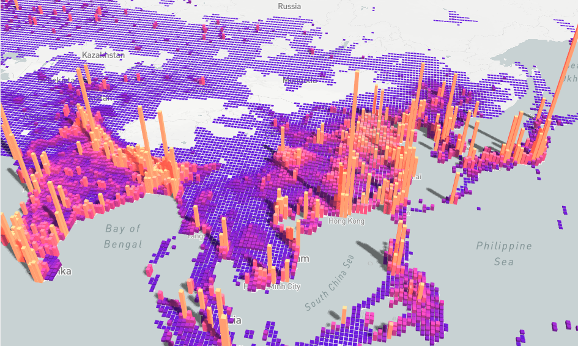

特性
ECharts，一个使用 JavaScript 实现的开源可视化库，可以流畅的运行在 PC 和移动设备上，兼容当前绝大部分浏览器（IE8/9/10/11，Chrome，Firefox，Safari等），底层依赖矢量图形库 ZRender，提供直观，交互丰富，可高度个性化定制的数据可视化图表。
丰富的可视化类型
ECharts 提供了常规的折线图、柱状图、散点图、饼图、K线图，用于统计的盒形图，用于地理数据可视化的地图、热力图、线图，用于关系数据可视化的关系图、treemap、旭日图，多维数据可视化的平行坐标，还有用于 BI 的漏斗图，仪表盘，并且支持图与图之间的混搭。
除了已经内置的包含了丰富功能的图表，ECharts 还提供了自定义系列，只需要传入一个renderItem函数，就可以从数据映射到任何你想要的图形，更棒的是这些都还能和已有的交互组件结合使用而不需要操心其它事情。
你可以在下载界面下载包含所有图表的构建文件，如果只是需要其中一两个图表，又嫌包含所有图表的构建文件太大，也可以在在线构建中选择需要的图表类型后自定义构建。
多种数据格式无需转换直接使用
ECharts 内置的 dataset 属性（4.0+）支持直接传入包括二维表，key-value 等多种格式的数据源，通过简单的设置 encode 属性就可以完成从数据到图形的映射，这种方式更符合可视化的直觉，省去了大部分场景下数据转换的步骤，而且多个组件能够共享一份数据而不用克隆。
为了配合大数据量的展现，ECharts 还支持输入 TypedArray 格式的数据，TypedArray 在大数据量的存储中可以占用更少的内存，对 GC 友好等特性也可以大幅度提升可视化应用的性能。
千万数据的前端展现
通过增量渲染技术（4.0+），配合各种细致的优化，ECharts 能够展现千万级的数据量，并且在这个数据量级依然能够进行流畅的缩放平移等交互。
几千万的地理坐标数据就算使用二进制存储也要占上百 MB 的空间。因此 ECharts 同时提供了对流加载（4.0+）的支持，你可以使用 WebSocket 或者对数据分块后加载，加载多少渲染多少！不需要漫长地等待所有数据加载完再进行绘制。

移动端优化
ECharts 针对移动端交互做了细致的优化，例如移动端小屏上适于用手指在坐标系中进行缩放、平移。 PC 端也可以用鼠标在图中进行缩放（用鼠标滚轮）、平移等。
细粒度的模块化和打包机制可以让 ECharts 在移动端也拥有很小的体积，可选的 SVG 渲染模块让移动端的内存占用不再捉襟见肘。
多渲染方案，跨平台使用！
ECharts 支持以 Canvas、SVG（4.0+）、VML 的形式渲染图表。VML 可以兼容低版本 IE，SVG 使得移动端不再为内存担忧，Canvas 可以轻松应对大数据量和特效的展现。不同的渲染方式提供了更多选择，使得 ECharts 在各种场景下都有更好的表现。
除了 PC 和移动端的浏览器，ECharts 还能在 node 上配合 node-canvas 进行高效的服务端渲染（SSR）。从 4.0 开始我们还和微信小程序的团队合作，提供了 ECharts 对小程序的适配！
社区热心的贡献者也为我们提供了丰富的其它语言扩展，比如 Python 的pyecharts，R 语言的 recharts, Julia 的 ECharts.jl 等等。
我们希望平台和语言都不会成为大家使用 ECharts 实现可视化的限制！
深度的交互式数据探索
交互是从数据中发掘信息的重要手段。“总览为先，缩放过滤按需查看细节”是数据可视化交互的基本需求。
ECharts 一直在交互的路上前进，我们提供了 图例、视觉映射、数据区域缩放、tooltip、数据刷选等开箱即用的交互组件，可以对数据进行多维度数据筛取、视图缩放、展示细节等交互操作。
多维数据的支持以及丰富的视觉编码手段
ECharts 3 开始加强了对多维数据的支持。除了加入了平行坐标等常见的多维数据可视化工具外，对于传统的散点图等，传入的数据也可以是多个维度的。配合视觉映射组件 visualMap 提供的丰富的视觉编码，能够将不同维度的数据映射到颜色，大小，透明度，明暗度等不同的视觉通道。
动态数据
ECharts 由数据驱动，数据的改变驱动图表展现的改变。因此动态数据的实现也变得异常简单，只需要获取数据，填入数据，ECharts 会找到两组数据之间的差异然后通过合适的动画去表现数据的变化。配合 timeline 组件能够在更高的时间维度上去表现数据的信息。
绚丽的特效
ECharts 针对线数据，点数据等地理数据的可视化提供了吸引眼球的特效。
通过 GL 实现更多更强大绚丽的三维可视化
想要在 VR，大屏场景里实现三维的可视化效果？我们提供了基于 WebGL 的 ECharts GL，你可以跟使用 ECharts 普通组件一样轻松的使用 ECharts GL 绘制出三维的地球，建筑群，人口分布的柱状图，在这基础之上我们还提供了不同层级的画面配置项，几行配置就能得到艺术化的画面！



无障碍访问（4.0+）
当我们说到“可视化”的时候，我们往往很自然地将它与“看得⻅”联系在一起，但其 实这是片面的。W3C制定了无障碍富互联网应用规范集(WAI-ARIA，the Accessible Rich Internet Applications Suite)，致力于使得网⻚内容和网⻚应 用能够被更多残障人士访问。
ECharts 4.0遵从这一规范，支持自动根据图表配置项智能生成描述，使得盲人可 以在朗读设备的帮助下了解图表内容，让图表可以被更多人群访问！